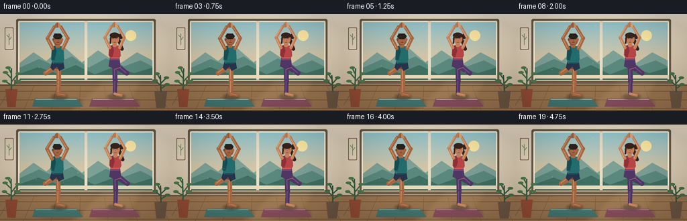
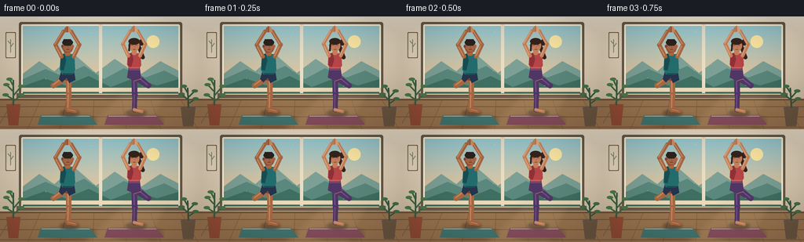

CODING AGENTS AS PIXEL WORLD MODELS
traex/GPT-5.6-Sol · instance_preservation_0030
点击播放 · 原生 RGB 像素
逐轮保存的候选
回放视频、检查图与代码变化。
每份候选均可单独播放。实际图片检查记录在下方工具轨迹中。
候选 01播放与检查图
点击播放 · 原生 RGB 像素


展开代码变化
--- 上一保存版本
+++ 本次保存版本
@@ -0,0 +1,263 @@
+from pathlib import Path
+import math
+import numpy as np
+from PIL import Image, ImageDraw, ImageFilter
+import artifact_io
+
+W, H, N = 256, 144, 20
+S = 4
+rng = np.random.default_rng(30)
+
+
+def sc(v): return int(round(v * S))
+def pts(seq): return [(sc(x), sc(y)) for x, y in seq]
+
+def ellipse(d, box, fill, outline=None, width=1):
+ d.ellipse(tuple(sc(v) for v in box), fill=fill, outline=outline, width=sc(width) if outline else 1)
+
+def polygon(d, xy, fill): d.polygon(pts(xy), fill=fill)
+
+def line(d, xy, fill, width, joint='curve'):
+ d.line(pts(xy), fill=fill, width=sc(width), joint=joint)
+
+
+def capsule(d, a, b, color, width, highlight=None):
+ line(d, [a, b], color, width)
+ r = width / 2
+ for p in (a, b): ellipse(d, (p[0]-r, p[1]-r, p[0]+r, p[1]+r), color)
+ if highlight:
+ ax, ay = a; bx, by = b
+ line(d, [(ax-0.7, ay-0.5), (bx-0.7, by-0.5)], highlight, max(1, width*0.22))
+
+
+def soft_ellipse(base, box, color, blur=3):
+ layer = Image.new('RGBA', base.size, (0,0,0,0)); ld = ImageDraw.Draw(layer)
+ ld.ellipse(tuple(sc(v) for v in box), fill=color)
+ layer = layer.filter(ImageFilter.GaussianBlur(sc(blur)))
+ base.alpha_composite(layer)
+
+
+def rounded(d, box, radius, fill, outline=None, width=1):
+ d.rounded_rectangle(tuple(sc(v) for v in box), radius=sc(radius), fill=fill,
+ outline=outline, width=sc(width))
+
+
+def draw_background(t):
+ # warm plaster wall with a fine vertical illumination gradient
+ yy = np.arange(H*S)[:, None]
+ top = np.array([239, 226, 203], dtype=float)
+ bot = np.array([202, 183, 154], dtype=float)
+ f = yy / (H*S-1)
+ arr = np.empty((H*S, W*S, 4), dtype=np.uint8)
+ rgb = top[None,None,:]*(1-f[:,:,None]) + bot[None,None,:]*f[:,:,None]
+ arr[:,:,:3] = np.broadcast_to(rgb, (H*S,W*S,3)).astype(np.uint8)
+ arr[:,:,3] = 255
+ im = Image.fromarray(arr, 'RGBA')
+ d = ImageDraw.Draw(im)
+
+ # window recess and frame
+ rounded(d, (24, 7, 232, 103), 3, (105,92,74,255))
+ rounded(d, (27, 10, 229, 100), 2, (255,246,218,255))
+ # sky window gradient
+ for y in range(sc(12), sc(98)):
+ yf = (y/sc(1)-12)/86
+ c0=np.array([151,203,211]); c1=np.array([250,194,138])
+ c=tuple((c0*(1-yf)+c1*yf).astype(int))+(255,)
+ d.line([(sc(29),y),(sc(227),y)], fill=c, width=1)
+ # distant landscape layers
+ polygon(d, [(29,73),(50,57),(69,70),(94,48),(122,72),(146,54),(177,75),(204,57),(227,69),(227,98),(29,98)], (126,161,150,255))
+ polygon(d, [(29,80),(58,67),(79,76),(107,63),(132,80),(158,66),(185,78),(209,69),(227,78),(227,99),(29,99)], (91,137,125,255))
+ polygon(d, [(29,89),(57,79),(83,88),(113,76),(141,90),(170,79),(200,88),(227,80),(227,99),(29,99)], (64,112,97,255))
+ # soft sun
+ sunx = 195 + 0.8*math.sin(t*math.tau)
+ ellipse(d, (sunx-8, 24, sunx+8, 40), (255,235,166,245))
+ # panes and sill
+ d.rectangle((sc(126),sc(10),sc(130),sc(100)), fill=(234,222,196,255))
+ d.rectangle((sc(27),sc(91),sc(229),sc(96)), fill=(235,220,188,255))
+ d.rectangle((sc(21),sc(98),sc(235),sc(104)), fill=(112,94,71,255))
+ d.line((sc(24),sc(99),sc(232),sc(99)), fill=(255,239,207,255), width=sc(1))
+
+ # floor
+ polygon(d, [(0,105),(256,105),(256,144),(0,144)], (157,119,81,255))
+ for y in (115, 128, 141):
+ d.line((0,sc(y),sc(256),sc(y)), fill=(121,88,60,150), width=sc(1))
+ # floorboard seams in perspective
+ for x in (-5, 35, 76, 118, 161, 205, 252):
+ d.line((sc(128+(x-128)*0.82),sc(105),sc(x),sc(144)), fill=(132,96,63,150), width=sc(.65))
+ d.line((0,sc(106),sc(256),sc(106)), fill=(111,83,62,255), width=sc(2))
+
+ # wall art and shelf accents
+ rounded(d, (7,20,20,53), 1, (118,94,72,255))
+ rounded(d, (8,21,19,52), 1, (232,218,191,255))
+ line(d, [(13.5,46),(13.5,29)], (122,145,111,255), 1)
+ line(d, [(13.5,35),(10,31)], (122,145,111,255), 1)
+ line(d, [(13.5,39),(17,34)], (122,145,111,255), 1)
+
+ # plants at either edge, leaves gently swaying
+ sway = math.sin(t*math.tau)*1.0
+ # pots
+ polygon(d, [(8,112),(26,112),(23,139),(11,139)], (150,78,54,255))
+ polygon(d, [(230,115),(249,115),(246,140),(233,140)], (111,88,68,255))
+ line(d, [(17,113),(17+sway,81)], (54,92,63,255), 2)
+ leaves=[((17,96),(8+sway,87)),((17,101),(27+sway,89)),((17,89),(12+sway,80)),((17,106),(7+sway,100)),((17,108),(27+sway,100))]
+ for a,b in leaves:
+ line(d,[a,b],(62,105,71,255),2)
+ ellipse(d,(b[0]-4,b[1]-2,b[0]+4,b[1]+2),(76,123,78,255))
+ line(d, [(240,116),(239-sway*.7,91)], (50,83,59,255), 2)
+ leaves2=[((240,107),(231-sway,99)),((240,103),(248-sway,95)),((239,98),(234-sway,89)),((240,111),(249-sway,105))]
+ for a,b in leaves2:
+ line(d,[a,b],(54,94,64,255),2)
+ ellipse(d,(b[0]-4,b[1]-2,b[0]+4,b[1]+2),(69,113,72,255))
+
+ # moving shafts of sun, quiet and low contrast
+ glow = Image.new('RGBA', im.size, (0,0,0,0)); gd=ImageDraw.Draw(glow)
+ polygon(gd, [(154,96),(216,96),(190,144),(102,144)], (255,224,157,23))
+ glow=glow.filter(ImageFilter.GaussianBlur(sc(5))); im.alpha_composite(glow)
+ return im
+
+
+def draw_mat(im, x, color):
+ d=ImageDraw.Draw(im)
+ soft_ellipse(im, (x-35,126,x+37,140), (55,38,25,65), 2.2)
+ polygon(d, [(x-34,126),(x+28,126),(x+38,138),(x-38,138)], color)
+ line(d, [(x-33,127),(x+28,127)], (255,255,255,45), .6)
+
+
+def draw_man(im, phase):
+ d=ImageDraw.Draw(im)
+ sway=1.05*math.sin(phase)
+ breath=.45*math.sin(phase+0.8)
+ x=86+sway
+ skin=(170,105,68,255); skin_hi=(211,143,96,255); skin_dark=(126,72,52,255)
+ hair=(42,35,32,255); shirt=(35,110,112,255); shirt_dark=(24,78,82,255); shorts=(38,52,78,255)
+ # contact shadow
+ soft_ellipse(im,(76,119,101,127),(40,30,26,85),1.6)
+ # support leg behind shorts
+ capsule(d,(x+1,79),(x+1.5,101),skin,7,skin_hi)
+ capsule(d,(x+1.5,100),(x+1,119),skin,6.2,skin_hi)
+ # supporting foot grounded
+ capsule(d,(x+1,119),(x+10,121),skin,4.5,skin_hi)
+ # bent leg in tree pose, knee points left, sole presses thigh
+ capsule(d,(x-1,79),(x-18,88),skin,7,skin_hi)
+ capsule(d,(x-18,88),(x-5,78),skin,6,skin_hi)
+ # tucked foot emphasized
+ capsule(d,(x-6,78),(x+1,80),skin_dark,4.5)
+ # shorts, hem detail
+ polygon(d,[(x-8,69),(x+8,69),(x+10,81),(x+2,85),(x-1,78),(x-7,84),(x-11,80)],shorts)
+ line(d,[(x-8,72),(x+8,72)],(91,111,139,255),1)
+ # torso tank, athletic tapered silhouette
+ polygon(d,[(x-8.5,48),(x+8.5,48),(x+9.5,68+breath),(x+6,74),(x-7,74),(x-10,67+breath)],shirt)
+ polygon(d,[(x-9,49),(x-4,47),(x-2,56),(x-5,69),(x-9,68)],shirt_dark)
+ line(d,[(x-6,73),(x+7,73)],(24,64,69,255),1)
+ # arms raised in overhead prayer
+ shoulderL=(x-7.8,51); elbowL=(x-15.5,36+sway*.25); wristL=(x-5.2,19)
+ shoulderR=(x+7.8,51); elbowR=(x+15.0,36-sway*.2); wristR=(x+4.7,19)
+ capsule(d,shoulderL,elbowL,skin,5.2,skin_hi); capsule(d,elbowL,wristL,skin,4.5,skin_hi)
+ capsule(d,shoulderR,elbowR,skin,5.2,skin_hi); capsule(d,elbowR,wristR,skin,4.5,skin_hi)
+ # hands pressed together
+ polygon(d,[(x-5.4,20),(x-3.4,14.5),(x-.5,12),(x-.2,20)],skin)
+ polygon(d,[(x+5.2,20),(x+3.2,14.5),(x+.5,12),(x+.2,20)],skin_hi)
+ line(d,[(x,13),(x,20)],skin_dark,.7)
+ # neck
+ rounded(d,(x-3.4,43,x+3.4,50),2,skin)
+ # ears and head
+ ellipse(d,(x-7.2,31.5,x+7.2,46.5),skin)
+ ellipse(d,(x-8.1,36,x-5.4,40),skin_dark); ellipse(d,(x+5.4,36,x+8.1,40),skin)
+ # jaw shade / nose / peaceful closed eyes
+ polygon(d,[(x-6.5,39),(x-2,45),(x+3,45),(x+6,40),(x+5,45),(x-4,47)],(146,84,61,150))
+ ellipse(d,(x-6.8,29,x+6.7,37.2),hair)
+ polygon(d,[(x-7,34),(x-5,29),(x+4,29),(x+7,33),(x+4,32),(x+2,35),(x-2,32),(x-5,35)],hair)
+ line(d,[(x-4.5,37),(x-1.8,37)],(55,41,37,255),.65)
+ line(d,[(x+1.9,37),(x+4.3,37)],(55,41,37,255),.65)
+ line(d,[(x+.2,38),(x+.8,40.5)],(126,72,52,255),.55)
+ line(d,[(x-1.6,42),(x+2,42)],(91,53,44,255),.65)
+
+
+def draw_woman(im, phase):
+ d=ImageDraw.Draw(im)
+ sway=-.85*math.sin(phase+.25)
+ breath=.4*math.sin(phase+1.1)
+ x=171+sway
+ skin=(199,132,94,255); skin_hi=(234,170,119,255); skin_dark=(151,88,70,255)
+ hair=(56,35,30,255); top=(185,71,72,255); top_hi=(224,100,91,255)
+ leggings=(82,55,103,255); leg_hi=(118,81,139,255)
+ soft_ellipse(im,(160,119,187,127),(40,30,26,80),1.6)
+ # ponytail behind neck and shoulder, preserving feminine silhouette
+ capsule(d,(x+5,36),(x+11,52),hair,5)
+ ellipse(d,(x+6,29,x+13,37),hair)
+ # support leg in leggings
+ capsule(d,(x,77),(x+.8,100),leggings,7.2,leg_hi)
+ capsule(d,(x+.8,100),(x+.4,119),leggings,6.2,leg_hi)
+ capsule(d,(x+.2,119),(x+9.5,121),skin,4.3,skin_hi)
+ # outward bent leg, knee right and foot tucked against thigh
+ capsule(d,(x+1,78),(x+18,88),leggings,7.2,leg_hi)
+ capsule(d,(x+18,88),(x+6,78),leggings,6.4,leg_hi)
+ capsule(d,(x+7,78),(x+1,80),skin,4.3,skin_hi)
+ # waist and fitted crop top
+ polygon(d,[(x-7,65),(x+7,65),(x+9,79),(x,82),(x-9,78)],leggings)
+ line(d,[(x-7,68),(x+7,68)],leg_hi,1)
+ polygon(d,[(x-8,47),(x+8,47),(x+9,62+breath),(x+6,67),(x-6,67),(x-9,61+breath)],top)
+ polygon(d,[(x-8,48),(x-3,46),(x-1,55),(x-4,65),(x-8,62)],(145,49,58,255))
+ line(d,[(x-6,65),(x+6,65)],top_hi,1)
+ # arms overhead
+ shL=(x-7.5,50); elL=(x-14.5,35); wrL=(x-4.8,18.5)
+ shR=(x+7.5,50); elR=(x+14.2,35.2); wrR=(x+4.6,18.5)
+ capsule(d,shL,elL,skin,4.7,skin_hi); capsule(d,elL,wrL,skin,4.0,skin_hi)
+ capsule(d,shR,elR,skin,4.7,skin_hi); capsule(d,elR,wrR,skin,4.0,skin_hi)
+ # palms
+ polygon(d,[(x-5.2,19.5),(x-3.2,14),(x-.5,11.5),(x-.1,19.5)],skin)
+ polygon(d,[(x+5.0,19.5),(x+3.1,14),(x+.5,11.5),(x+.1,19.5)],skin_hi)
+ line(d,[(x,12),(x,19)],skin_dark,.6)
+ # neck/head
+ rounded(d,(x-3,42,x+3,49),2,skin)
+ ellipse(d,(x-6.8,29.5,x+6.8,44.7),skin)
+ ellipse(d,(x-7.5,35,x-5.2,39),skin_dark)
+ # swept hair cap and side lock
+ ellipse(d,(x-7.2,27.5,x+7,36),hair)
+ polygon(d,[(x-7,32),(x-4,29),(x+5,29),(x+7,34),(x+4,32),(x+2,35),(x-1,31),(x-5,36)],hair)
+ capsule(d,(x-5.5,33),(x-6.5,43),hair,2.3)
+ # calm facial marks
+ line(d,[(x-4,36.5),(x-1.6,36.5)],(67,43,37,255),.55)
+ line(d,[(x+1.7,36.5),(x+4,36.5)],(67,43,37,255),.55)
+ line(d,[(x+.1,37.5),(x+.6,40)],skin_dark,.5)
+ line(d,[(x-1.5,42),(x+1.8,42)],(130,61,61,255),.65)
+
+
+def add_atmosphere(im, i):
+ # sparse warm dust motes in sunlight; deterministic trajectories
+ layer=Image.new('RGBA',im.size,(0,0,0,0)); d=ImageDraw.Draw(layer)
+ for k in range(12):
+ x0=36+((k*41)%185); y0=16+((k*29)%78)
+ x=x0+2.5*math.sin(i*.19+k*1.7)
+ y=y0-((i*.45+k*2.1)%7)
+ r=.35+(k%3)*.16
+ ellipse(d,(x-r,y-r,x+r,y+r),(255,239,194,70))
+ im.alpha_composite(layer)
+
+
+def make_frame(i):
+ # two slow breathing cycles across the clip
+ t=i/(N-1)
+ phase=2*math.pi*t*1.05
+ im=draw_background(t)
+ draw_mat(im,86,(69,119,113,255))
+ draw_mat(im,171,(139,80,96,255))
+ draw_man(im,phase)
+ draw_woman(im,phase)
+ add_atmosphere(im,i)
+ # modest vignette for cinematic focus
+ a=np.asarray(im.convert('RGB')).astype(np.float32)
+ yy,xx=np.mgrid[0:H*S,0:W*S]
+ dx=(xx-W*S/2)/(W*S/2); dy=(yy-H*S/2)/(H*S/2)
+ vig=np.clip(1-0.12*(dx*dx+dy*dy),.83,1)[...,None]
+ a=np.clip(a*vig,0,255).astype(np.uint8)
+ out=Image.fromarray(a,'RGB').resize((W,H),Image.Resampling.LANCZOS)
+ return np.asarray(out,dtype=np.uint8)
+
+
+def main():
+ frames=np.stack([make_frame(i) for i in range(N)],axis=0)
+ artifact_io.save(frames,Path(__file__).resolve().parent)
+ print('saved',frames.shape,frames.dtype,'range',frames.min(),frames.max())
+
+if __name__=='__main__': main()
可观测工具轨迹
实际执行的命令与返回图片。
命令 1exit 0
/bin/bash -lc "cat GENERATION_RULES.md && printf '\\n--- task_spec.json ---\\n' && cat task_spec.json"
命令 2exit 0
/bin/bash -lc "printf '%s\\n' '--- prompt.txt ---'; cat prompt.txt; printf '%s\\n' '--- files ---'; find . -maxdepth 2 -type f -printf '%p\\n' | sort"
命令 3exit 0
/bin/bash -lc "command -v ffmpeg; command -v python3; python3 - <<'PY' mods=['PIL','numpy','cv2','imageio','matplotlib'] for m in mods: try: x=__import__(m); print(m,'OK',getattr(x,'__version__','')) except Exception as e: print(m,'NO',e) PY"
命令 4exit 0
/bin/bash -lc "sed -n '1,240p' artifact_io.py"
命令 5exit 0
/bin/bash -lc "cat > generate.py <<'PY'
from pathlib import Path
import math
import numpy as np
from PIL import Image, ImageDraw, ImageFilter
import artifact_io
W, H, N = 256, 144, 20
S = 4
rng = np.random.default_rng(30)
def sc(v): return int(round(v * S))
def pts(seq): return [(sc(x), sc(y)) for x, y in seq]
def ellipse(d, box, fill, outline=None, width=1):
d.ellipse(tuple(sc(v) for v in box), fill=fill, outline=outline, width=sc(width) if outline else 1)
def polygon(d, xy, fill): d.polygon(pts(xy), fill=fill)
def line(d, xy, fill, width, joint='curve'):
d.line(pts(xy), fill=fill, width=sc(width), joint=joint)
def capsule(d, a, b, color, width, highlight=None):
line(d, [a, b], color, width)
r = width / 2
for p in (a, b): ellipse(d, (p[0]-r, p[1]-r, p[0]+r, p[1]+r), color)
if highlight:
ax, ay = a; bx, by = b
line(d, [(ax-0.7, ay-0.5), (bx-0.7, by-0.5)], highlight, max(1, width*0.22))
def soft_ellipse(base, box, color, blur=3):
layer = Image.new('RGBA', base.size, (0,0,0,0)); ld = ImageDraw.Draw(layer)
ld.ellipse(tuple(sc(v) for v in box), fill=color)
layer = layer.filter(ImageFilter.GaussianBlur(sc(blur)))
base.alpha_composite(layer)
def rounded(d, box, radius, fill, outline=None, width=1):
d.rounded_rectangle(tuple(sc(v) for v in box), radius=sc(radius), fill=fill,
outline=outline, width=sc(width))
def draw_background(t):
# warm plaster wall with a fine vertical illumination gradient
yy = np.arange(H*S)[:, None]
top = np.array([239, 226, 203], dtype=float)
bot = np.array([202, 183, 154], dtype=float)
f = yy / (H*S-1)
arr = np.empty((H*S, W*S, 4), dtype=np.uint8)
rgb = top[None,None,:]*(1-f[:,:,None]) + bot[None,None,:]*f[:,:,None]
arr[:,:,:3] = np.broadcast_to(rgb, (H*S,W*S,3)).astype(np.uint8)
arr[:,:,3] = 255
im = Image.fromarray(arr, 'RGBA')
d = ImageDraw.Draw(im)
# window recess and frame
rounded(d, (24, 7, 232, 103), 3, (105,92,74,255))
rounded(d, (27, 10, 229, 100), 2, (255,246,218,255))
# sky window gradient
for y in range(sc(12), sc(98)):
yf = (y/sc(1)-12)/86
c0=np.array([151,203,211]); c1=np.array([250,194,138])
c=tuple((c0*(1-yf)+c1*yf).astype(int))+(255,)
d.line([(sc(29),y),(sc(227),y)], fill=c, width=1)
# distant landscape layers
polygon(d, [(29,73),(50,57),(69,70),(94,48),(122,72),(146,54),(177,75),(204,57),(227,69),(227,98),(29,98)], (126,161,150,255))
polygon(d, [(29,80),(58,67),(79,76),(107,63),(132,80),(158,66),(185,78),(209,69),(227,78),(227,99),(29,99)], (91,137,125,255))
polygon(d, [(29,89),(57,79),(83,88),(113,76),(141,90),(170,79),(200,88),(227,80),(227,99),(29,99)], (64,112,97,255))
# soft sun
sunx = 195 + 0.8*math.sin(t*math.tau)
ellipse(d, (sunx-8, 24, sunx+8, 40), (255,235,166,245))
# panes and sill
d.rectangle((sc(126),sc(10),sc(130),sc(100)), fill=(234,222,196,255))
d.rectangle((sc(27),sc(91),sc(229),sc(96)), fill=(235,220,188,255))
d.rectangle((sc(21),sc(98),sc(235),sc(104)), fill=(112,94,71,255))
d.line((sc(24),sc(99),sc(232),sc(99)), fill=(255,239,207,255), width=sc(1))
# floor
polygon(d, [(0,105),(256,105),(256,144),(0,144)], (157,119,81,255))
for y in (115, 128, 141):
d.line((0,sc(y),sc(256),sc(y)), fill=(121,88,60,150), width=sc(1))
# floorboard seams in perspective
for x in (-5, 35, 76, 118, 161, 205, 252):
d.line((sc(128+(x-128)*0.82),sc(105),sc(x),sc(144)), fill=(132,96,63,150), width=sc(.65))
d.line((0,sc(106),sc(256),sc(106)), fill=(111,83,62,255), width=sc(2))
# wall art and shelf accents
rounded(d, (7,20,20,53), 1, (118,94,72,255))
rounded(d, (8,21,19,52), 1, (232,218,191,255))
line(d, [(13.5,46),(13.5,29)], (122,145,111,255), 1)
line(d, [(13.5,35),(10,31)], (122,145,111,255), 1)
line(d, [(13.5,39),(17,34)], (122,145,111,255), 1)
# plants at either edge, leaves gently swaying
sway = math.sin(t*math.tau)*1.0
# pots
polygon(d, [(8,112),(26,112),(23,139),(11,139)], (150,78,54,255))
polygon(d, [(230,115),(249,115),(246,140),(233,140)], (111,88,68,255))
line(d, [(17,113),(17+sway,81)], (54,92,63,255), 2)
leaves=[((17,96),(8+sway,87)),((17,101),(27+sway,89)),((17,89),(12+sway,80)),((17,106),(7+sway,100)),((17,108),(27+sway,100))]
for a,b in leaves:
line(d,[a,b],(62,105,71,255),2)
ellipse(d,(b[0]-4,b[1]-2,b[0]+4,b[1]+2),(76,123,78,255))
line(d, [(240,116),(239-sway*.7,91)], (50,83,59,255), 2)
leaves2=[((240,107),(231-sway,99)),((240,103),(248-sway,95)),((239,98),(234-sway,89)),((240,111),(249-sway,105))]
for a,b in leaves2:
line(d,[a,b],(54,94,64,255),2)
ellipse(d,(b[0]-4,b[1]-2,b[0]+4,b[1]+2),(69,113,72,255))
# moving shafts of sun, quiet and low contrast
glow = Image.new('RGBA', im.size, (0,0,0,0)); gd=ImageDraw.Draw(glow)
polygon(gd, [(154,96),(216,96),(190,144),(102,144)], (255,224,157,23))
glow=glow.filter(ImageFilter.GaussianBlur(sc(5))); im.alpha_composite(glow)
return im
def draw_mat(im, x, color):
d=ImageDraw.Draw(im)
soft_ellipse(im, (x-35,126,x+37,140), (55,38,25,65), 2.2)
polygon(d, [(x-34,126),(x+28,126),(x+38,138),(x-38,138)], color)
line(d, [(x-33,127),(x+28,127)], (255,255,255,45), .6)
def draw_man(im, phase):
d=ImageDraw.Draw(im)
sway=1.05*math.sin(phase)
breath=.45*math.sin(phase+0.8)
x=86+sway
skin=(170,105,68,255); skin_hi=(211,143,96,255); skin_dark=(126,72,52,255)
hair=(42,35,32,255); shirt=(35,110,112,255); shirt_dark=(24,78,82,255); shorts=(38,52,78,255)
# contact shadow
soft_ellipse(im,(76,119,101,127),(40,30,26,85),1.6)
# support leg behind shorts
capsule(d,(x+1,79),(x+1.5,101),skin,7,skin_hi)
capsule(d,(x+1.5,100),(x+1,119),skin,6.2,skin_hi)
# supporting foot grounded
capsule(d,(x+1,119),(x+10,121),skin,4.5,skin_hi)
# bent leg in tree pose, knee points left, sole presses thigh
capsule(d,(x-1,79),(x-18,88),skin,7,skin_hi)
capsule(d,(x-18,88),(x-5,78),skin,6,skin_hi)
# tucked foot emphasized
capsule(d,(x-6,78),(x+1,80),skin_dark,4.5)
# shorts, hem detail
polygon(d,[(x-8,69),(x+8,69),(x+10,81),(x+2,85),(x-1,78),(x-7,84),(x-11,80)],shorts)
line(d,[(x-8,72),(x+8,72)],(91,111,139,255),1)
# torso tank, athletic tapered silhouette
polygon(d,[(x-8.5,48),(x+8.5,48),(x+9.5,68+breath),(x+6,74),(x-7,74),(x-10,67+breath)],shirt)
polygon(d,[(x-9,49),(x-4,47),(x-2,56),(x-5,69),(x-9,68)],shirt_dark)
line(d,[(x-6,73),(x+7,73)],(24,64,69,255),1)
# arms raised in overhead prayer
shoulderL=(x-7.8,51); elbowL=(x-15.5,36+sway*.25); wristL=(x-5.2,19)
shoulderR=(x+7.8,51); elbowR=(x+15.0,36-sway*.2); wristR=(x+4.7,19)
capsule(d,shoulderL,elbowL,skin,5.2,skin_hi); capsule(d,elbowL,wristL,skin,4.5,skin_hi)
capsule(d,shoulderR,elbowR,skin,5.2,skin_hi); capsule(d,elbowR,wristR,skin,4.5,skin_hi)
# hands pressed together
polygon(d,[(x-5.4,20),(x-3.4,14.5),(x-.5,12),(x-.2,20)],skin)
polygon(d,[(x+5.2,20),(x+3.2,14.5),(x+.5,12),(x+.2,20)],skin_hi)
line(d,[(x,13),(x,20)],skin_dark,.7)
# neck
rounded(d,(x-3.4,43,x+3.4,50),2,skin)
# ears and head
ellipse(d,(x-7.2,31.5,x+7.2,46.5),skin)
ellipse(d,(x-8.1,36,x-5.4,40),skin_dark); ellipse(d,(x+5.4,36,x+8.1,40),skin)
# jaw shade / nose / peaceful closed eyes
polygon(d,[(x-6.5,39),(x-2,45),(x+3,45),(x+6,40),(x+5,45),(x-4,47)],(146,84,61,150))
ellipse(d,(x-6.8,29,x+6.7,37.2),hair)
polygon(d,[(x-7,34),(x-5,29),(x+4,29),(x+7,33),(x+4,32),(x+2,35),(x-2,32),(x-5,35)],hair)
line(d,[(x-4.5,37),(x-1.8,37)],(55,41,37,255),.65)
line(d,[(x+1.9,37),(x+4.3,37)],(55,41,37,255),.65)
line(d,[(x+.2,38),(x+.8,40.5)],(126,72,52,255),.55)
line(d,[(x-1.6,42),(x+2,42)],(91,53,44,255),.65)
def draw_woman(im, phase):
d=ImageDraw.Draw(im)
sway=-.85*math.sin(phase+.25)
breath=.4*math.sin(phase+1.1)
x=171+sway
skin=(199,132,94,255); skin_hi=(234,170,119,255); skin_dark=(151,88,70,255)
hair=(56,35,30,255); top=(185,71,72,255); top_hi=(224,100,91,255)
leggings=(82,55,103,255); leg_hi=(118,81,139,255)
soft_ellipse(im,(160,119,187,127),(40,30,26,80),1.6)
# ponytail behind neck and shoulder, preserving feminine silhouette
capsule(d,(x+5,36),(x+11,52),hair,5)
ellipse(d,(x+6,29,x+13,37),hair)
# support leg in leggings
capsule(d,(x,77),(x+.8,100),leggings,7.2,leg_hi)
capsule(d,(x+.8,100),(x+.4,119),leggings,6.2,leg_hi)
capsule(d,(x+.2,119),(x+9.5,121),skin,4.3,skin_hi)
# outward bent leg, knee right and foot tucked against thigh
capsule(d,(x+1,78),(x+18,88),leggings,7.2,leg_hi)
capsule(d,(x+18,88),(x+6,78),leggings,6.4,leg_hi)
capsule(d,(x+7,78),(x+1,80),skin,4.3,skin_hi)
# waist and fitted crop top
polygon(d,[(x-7,65),(x+7,65),(x+9,79),(x,82),(x-9,78)],leggings)
line(d,[(x-7,68),(x+7,68)],leg_hi,1)
polygon(d,[(x-8,47),(x+8,47),(x+9,62+breath),(x+6,67),(x-6,67),(x-9,61+breath)],top)
polygon(d,[(x-8,48),(x-3,46),(x-1,55),(x-4,65),(x-8,62)],(145,49,58,255))
line(d,[(x-6,65),(x+6,65)],top_hi,1)
# arms overhead
shL=(x-7.5,50); elL=(x-14.5,35); wrL=(x-4.8,18.5)
shR=(x+7.5,50); elR=(x+14.2,35.2); wrR=(x+4.6,18.5)
capsule(d,shL,elL,skin,4.7,skin_hi); capsule(d,elL,wrL,skin,4.0,skin_hi)
capsule(d,shR,elR,skin,4.7,skin_hi); capsule(d,elR,wrR,skin,4.0,skin_hi)
# palms
polygon(d,[(x-5.2,19.5),(x-3.2,14),(x-.5,11.5),(x-.1,19.5)],skin)
polygon(d,[(x+5.0,19.5),(x+3.1,14),(x+.5,11.5),(x+.1,19.5)],skin_hi)
line(d,[(x,12),(x,19)],skin_dark,.6)
# neck/head
rounded(d,(x-3,42,x+3,49),2,skin)
ellipse(d,(x-6.8,29.5,x+6.8,44.7),skin)
ellipse(d,(x-7.5,35,x-5.2,39),skin_dark)
# swept hair cap and side lock
ellipse(d,(x-7.2,27.5,x+7,36),hair)
polygon(d,[(x-7,32),(x-4,29),(x+5,29),(x+7,34),(x+4,32),(x+2,35),(x-1,31),(x-5,36)],hair)
capsule(d,(x-5.5,33),(x-6.5,43),hair,2.3)
# calm facial marks
line(d,[(x-4,36.5),(x-1.6,36.5)],(67,43,37,255),.55)
line(d,[(x+1.7,36.5),(x+4,36.5)],(67,43,37,255),.55)
line(d,[(x+.1,37.5),(x+.6,40)],skin_dark,.5)
line(d,[(x-1.5,42),(x+1.8,42)],(130,61,61,255),.65)
def add_atmosphere(im, i):
# sparse warm dust motes in sunlight; deterministic trajectories
layer=Image.new('RGBA',im.size,(0,0,0,0)); d=ImageDraw.Draw(layer)
for k in range(12):
x0=36+((k*41)%185); y0=16+((k*29)%78)
x=x0+2.5*math.sin(i*.19+k*1.7)
y=y0-((i*.45+k*2.1)%7)
r=.35+(k%3)*.16
ellipse(d,(x-r,y-r,x+r,y+r),(255,239,194,70))
im.alpha_composite(layer)
def make_frame(i):
# two slow breathing cycles across the clip
t=i/(N-1)
phase=2*math.pi*t*1.05
im=draw_background(t)
draw_mat(im,86,(69,119,113,255))
draw_mat(im,171,(139,80,96,255))
draw_man(im,phase)
draw_woman(im,phase)
add_atmosphere(im,i)
# modest vignette for cinematic focus
a=np.asarray(im.convert('RGB')).astype(np.float32)
yy,xx=np.mgrid[0:H*S,0:W*S]
dx=(xx-W*S/2)/(W*S/2); dy=(yy-H*S/2)/(H*S/2)
vig=np.clip(1-0.12*(dx*dx+dy*dy),.83,1)[...,None]
a=np.clip(a*vig,0,255).astype(np.uint8)
out=Image.fromarray(a,'RGB').resize((W,H),Image.Resampling.LANCZOS)
return np.asarray(out,dtype=np.uint8)
def main():
frames=np.stack([make_frame(i) for i in range(N)],axis=0)
artifact_io.save(frames,Path(__file__).resolve().parent)
print('saved',frames.shape,frames.dtype,'range',frames.min(),frames.max())
if __name__=='__main__': main()
PY
python3 generate.py"命令 6exit 0
/bin/bash -lc "python3 - <<'PY'
from pathlib import Path
import numpy as np
from PIL import Image
p=Path('.')
z=np.load('pixels.npz')['pixels']
print('packed tensor', z.shape,z.dtype)
files=sorted(Path('frames').glob('*.png'))
print('frames',len(files))
ims=np.stack([np.array(Image.open(f)) for f in files])
print('array',ims.shape,ims.dtype)
print('frame means',np.round(ims.mean((1,2,3)),2).tolist())
d=np.abs(np.diff(ims.astype(np.int16),axis=0))
print('adjacent MAD min/mean/max',float(d.mean((1,2,3)).min()),float(d.mean()),float(d.mean((1,2,3)).max()))
print('changed pixel frac',np.round(np.any(d>2,axis=3).mean((1,2)),4).tolist())
print('outputs')
for f in ['pixels.npz','inspection.png','transition_check.png','index.html','generate.py']:
q=Path(f); print(f,q.exists(),q.stat().st_size if q.exists() else None)
PY"命令 7exit 0
/bin/bash -lc 'python3 -m py_compile generate.py artifact_io.py && git status --short 2>/dev/null || true'
保存候选 1 份；完成命令 7 次；可验证图片返回 0 张。原始 API 响应与完整日志保留在本地。